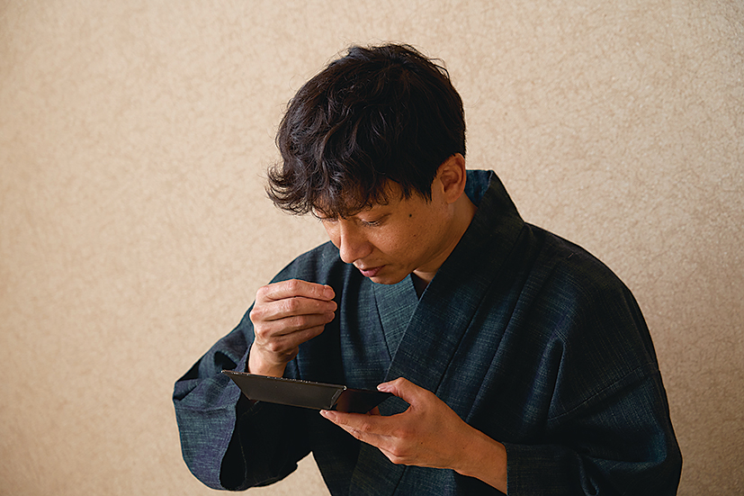

茶師十段による監修
堀 恵輔Keisuke Hori
日本茶鑑定士 十段 ／ 全国茶審査技術競技大会 優勝
当社の茶葉は、日本茶鑑定士の最高位である十段の資格を持つ茶師によって、厳格な味のチェックを行っています。
「堀は全国茶審査技術競技大会 優勝経験があり、お客様に届ける茶葉一枚一枚が、日本茶の最高水準を満たしていることを保証します。」

長年の経験と研ぎ澄まされた感覚で、最良の一葉を選び抜く。

茶師十段による監修
日本茶鑑定士 十段 ／ 全国茶審査技術競技大会 優勝
当社の茶葉は、日本茶鑑定士の最高位である十段の資格を持つ茶師によって、厳格な味のチェックを行っています。
「堀は全国茶審査技術競技大会 優勝経験があり、お客様に届ける茶葉一枚一枚が、日本茶の最高水準を満たしていることを保証します。」
業務用・卸しのご相談
料理屋・茶道教室・ホテルなど、業務用のお茶についてお気軽にご相談ください。